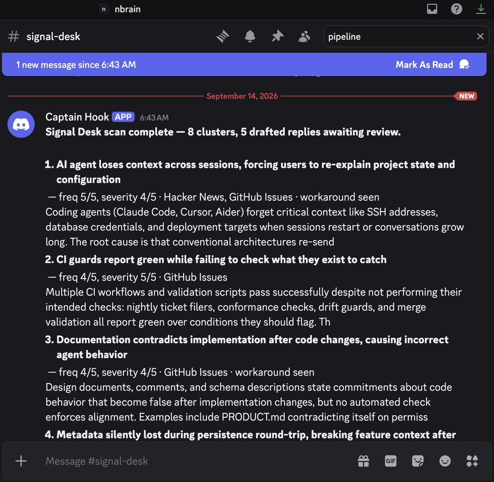
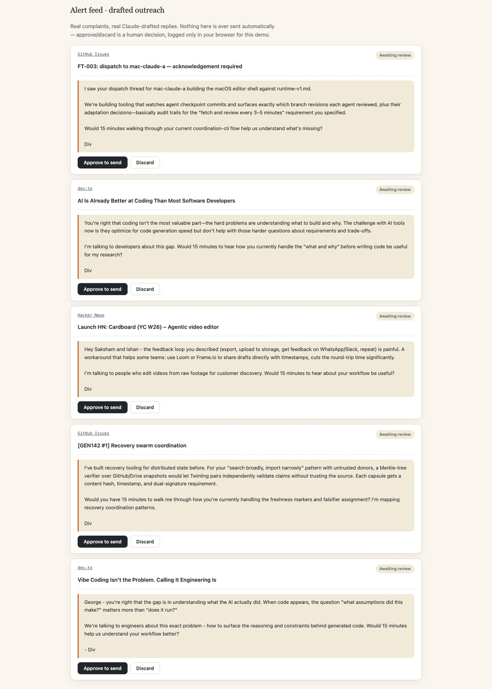
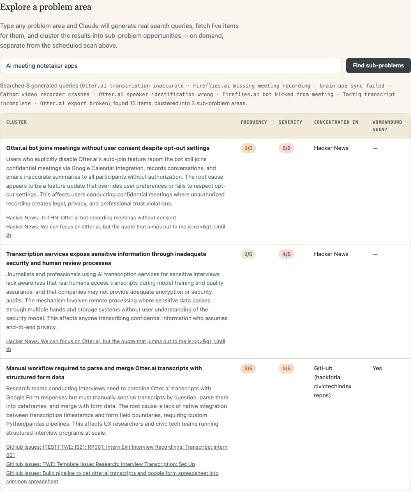

A working problem-sensing and response pipeline: scan recurring AI-tooling complaints, rank them into an opportunity matrix, then draft (never auto-send) outreach to the people describing the pain.
We did not start with a venture idea. We let the scan surface one, so the picking process itself needed to be disciplined.
Broad emotion terms alone returned marketing copy, not complaints. We layered three word classes together.
Ranked by a combination of how often the complaint recurs, how much damage it does, and whether we could actually find and message a concentrated group of people describing it.
| Rank | Problem cluster | Frequency | Severity | Concentrated in | Opportunity read |
|---|---|---|---|---|---|
| 01 | Coding agents lose context / repeat finished work in long sessions | High | High | GitHub issues, r/ClaudeAI, r/cursor, HN, dev.to | Sharp, technical, and people are already hand-building workarounds. Chosen for the live workflow. |
| 02 | "AI agents don't survive production," enterprise reliability skepticism | High | Medium | HN essays, thought-leadership blogs | Loud but diffuse. Hard to turn an essay reader into a discovery call. |
| 03 | AI support agents can't escalate or retain ticket context | High | High | G2 reviews, vendor comparison sites | Real pain, but an enterprise sales motion already crowded with incumbents |
| 04 | AI browser / computer-use agents too slow for daily use | Medium | Medium | Newsletter and Medium first-person reviews | Pre-chasm category, no clear repeatable wedge yet |
| 05 | AI notetakers raise privacy and legal exposure | Medium | Medium | Legal and HR trade press | Policy-adjacent, slower enterprise sales cycle |
The people describing this are specific, findable, and already paying for the tools that are frustrating them, which makes them reachable for customer discovery, not just a survey population.
Developers running multi-day or multi-hundred-tool-call agent sessions on Claude Code, Cursor, Windsurf, and Copilot, most visible in GitHub issue threads on those repos and in r/ClaudeAI and r/cursor.
The tell that this is a real wedge, not just noise: people are already hand-rolling fixes (checkpoint files, manual spec re-statements) instead of waiting for the vendor.
Everything up to the send button is automatable. The send button is not.
GitHub, HN, Reddit, Stack Overflow, dev.to, Substack, Discourse — all live APIs
Claude groups raw items into problem clusters, scores frequency and severity
Ranked digest posted to Slack and Discord, tagged by cluster and score
Claude writes one candidate response grounded in the exact complaint text
Founder edits or kills the draft. Nothing posts without a person approving it

Step 03, actually happening: this scan's real digest, posted to Discord seconds after the scan finished.
Updated from what we planned to what is actually deployed and running at signal-desk-dashboard.vercel.app.
| Stage | Tool | Why this one | Cost |
|---|---|---|---|
| Scan (technical) | GitHub Issues, Stack Exchange APIs | Direct, official APIs, no scraping, no ToS risk | Free |
| Scan (social) | HN Algolia, Reddit JSON | Official/public search endpoints; Reddit is best-effort, see slide 09 | Free |
| Scan (community) | Substack RSS, Discourse /search.json | Every Substack exposes an RSS feed; Discourse forums (Cursor's, OpenAI's) expose a free public search API — no scraping needed | Free |
| Cluster & score, Draft reply | Claude, via OpenRouter | One API key routes to Claude; swappable model slug without touching code | Pay-as-you-go, cents per scan |
| Notify | Slack + Discord webhooks | Both wired, either optional — Discord needed zero prerequisite setup | Free |
| Schedule, storage, hosting | Vercel Cron, Vercel Blob, Vercel | Serverless function on a timer, JSON results persisted between runs, auto-deployed from GitHub | Free tier |
You are a research analyst screening startup problem signal.
For each raw item I give you (from GitHub issues, forums, or reviews):
1. Assign it to a problem cluster. Name the cluster as a specific
failure in a job-to-be-done, not a vague category.
2. Write a robust 2-3 sentence DESCRIPTION of the problem: what
actually breaks, the likely root cause if inferable, and who
is affected. Be concrete, cite the mechanism, not the title.
3. Score FREQUENCY 1-5, how often this same complaint recurs.
4. Score SEVERITY 1-5, how much workflow, financial, or trust
damage the complaint describes.
5. Note WHERE CONCENTRATED, platform, subreddit, or repo.
6. Flag it if the poster describes a workaround they built
themselves. That is a stronger signal than the complaint alone.
Respond with ONLY a JSON array, no prose, matching this shape:
[{ "cluster", "description", "frequency", "severity",
"concentratedIn", "hasWorkaround", "itemIndexes" }]
Raw items (indexed): [live-fetched items from GitHub, HN, Reddit,
Stack Overflow, dev.to, Substack, Discourse]
Draft a reply from [founder name], building tooling for [cluster]. Here is the exact complaint and source link: [paste complaint + link] Rules: - Under 80 words. Sign with the founder's real name. - Reference the specific detail they described, not a summary. - Offer something useful first (a workaround, a direct answer) before making any ask. - If asking for time, frame it as customer discovery, never as a pitch or a beta invite. - Do not claim experience we do not have. - If the exchange goes past one reply, disclose we are building something in this space. - No marketing language.
No longer illustrative composites — this is an actual screenshot of signal-desk-dashboard.vercel.app after a real scan: real complaints from GitHub, HN, and dev.to, with real Claude-drafted replies sitting in "awaiting review." Nothing here was sent.

The same automation that makes outreach cheap for a founder is what makes it read as manufactured if we are not careful. Here is where we drew the line.
Four from the research phase, two more from actually shipping the pipeline to production.
Reddit's own search pages blocked us outright, and still return 403 in the deployed pipeline today. Hacker News item pages rate-limited a second request. Confirms you need an official API, not ad hoc fetching.
"AI agent frustrating" mostly surfaced explainer blogs and thought-leadership. Real complaint density only showed up once we narrowed to a specific product name plus a specific symptom word plus a specific venue.
No free path to X search turned up real posts. The sample tool list treats X API/MCP as a given, but it is a real gap unless someone already has paid access.
G2 confirmed the support-agent cluster is real at category scale, but gave us nothing individually addressable to message. Good for sizing a problem, useless for sourcing targets.
The exact OpenRouter model slug we launched with (claude-3.5-sonnet) stopped resolving mid-build with a bare 404. Model catalogs move under you; a live pipeline needs a fallback, not a hardcoded slug.
Fetching all sources sequentially blew past Vercel's 60s function limit and hit a 504. Fix was parallelizing every per-query request with Promise.allSettled — obvious in hindsight, invisible until real load hit it.
The demo now runs on the actual deployed product: signal-desk-dashboard.vercel.app. Type any problem area, watch it generate real search queries, fetch live items, and cluster them — in front of the class, live.

Typed "AI meeting notetaker apps" and it independently surfaced a real Hacker News thread about Otter.ai recording meetings without consent — the same privacy risk flagged in slide 02's research, found again live.
Wiring GitHub, Slack, and a real feed is done — it is live. Here is what is genuinely next.